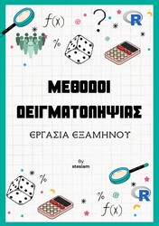
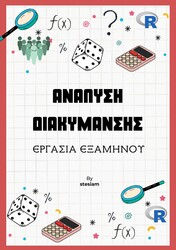
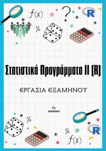

✨Σχεδιαγράμματα σημειώσεων
Πριν τη πρώτη διάλεξη
Βασικές μαθηματικές έννοιες και ιδιότητες που πρέπει να γνωρίζω
Μη Παραμετρική Στατιστική
Ένα μάθημα για έναν μη ιδανικά (μη κανονικά κατανεμημένο) φτιαγμένο κόσμο!
Χρονοσειρές
Βασική θεωρία, αναγνώριση μοτίβων διαγραμμάτων ACF & PACF και τύπων χρονοσειρών ARIMA
Εργασίες
Δειγματοληψία

141 σελίδες
Εργασία εξαμήνου στην οποία λύνω ασκήσεις σχετικές με απλή τυχαία, συστηματική, στρωματοποιημένη και δειγματοληψία συστάδων
Ανάλυση Διασποράς

104 σελίδες
Ασκήσεις σχετικές με στατιστικούς ελέγχους κατά ένα (One-way AnoVa) είτε κατά δύο παράγοντες (two-way AnoVa)
Στατιστικά Προγράμματα

44 σελίδες
Εφαρμογή στατιστικών ελέγχων (κανονικότητα, συσχέτιση κτλ.) χρησιμοποιώντας τη γλώσσα προγραμματισμού R.
Μη Παραμετρική Στατιστική
44 σελίδες
Εφαρμογή στατιστικών ελέγχων (κανονικότητα, συσχέτιση κτλ.) χρησιμοποιώντας τη γλώσσα προγραμματισμού R.